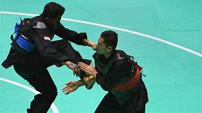

| Hobby | Year | Photo | Sejarah |
|---|---|---|---|
| Pencak Silat | 1948 | Pencak Silat menjadi arti olahraga pertempuran yang secara kolektif mencakup seni bela diri dari berbagai gaya. Bentuk pertempuran ini berasal dari Indonesia sebagai sarana pertahanan diri dan berubah menjadi olahraga yang kompetitif, sehingga mempelajari pencak silat bisa memberikan tujuan dan manfaat yang beragam. |  |
| Title | Produser | Production Year | Video |
|---|---|---|---|
| Rasuk 2 | Manoj Punjabi | 2016 |
| Title | Singer | Year Production | Music |
|---|---|---|---|
| Putus Atua Terus | Judika | 2019 |